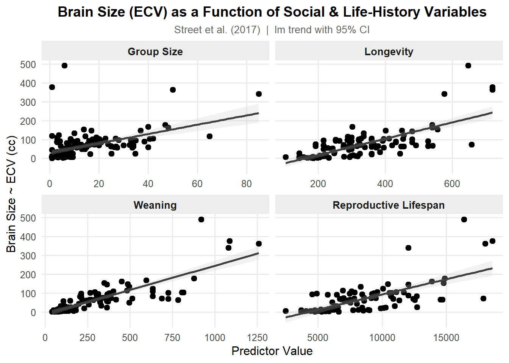
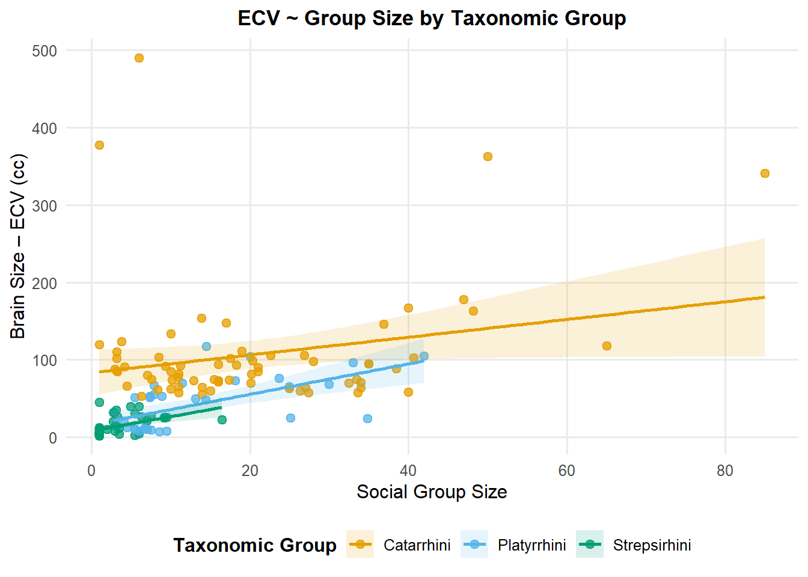
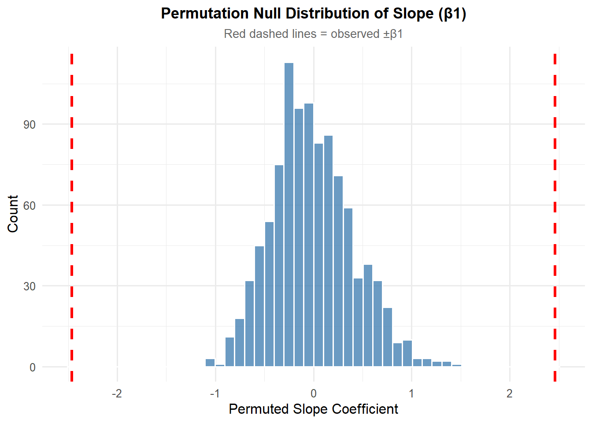

Rows: 301 Columns: 13
── Column specification ────────────────────────────────────────────────────────
Delimiter: ","
chr (2): Species, Taxonomic_group
dbl (11): Social_learning, Research_effort, ECV, Group_size, Gestation, Wean...
ℹ Use `spec()` to retrieve the full column specification for this data.
ℹ Specify the column types or set `show_col_types = FALSE` to quiet this message.
Species Taxonomic_group Social_learning Research_effort
Length:301 Length:301 Min. : 0.0 Min. : 1.00
Class :character Class :character 1st Qu.: 0.0 1st Qu.: 6.00
Mode :character Mode :character Median : 0.0 Median : 16.00
Mean : 2.3 Mean : 38.76
3rd Qu.: 0.0 3rd Qu.: 37.75
Max. :214.0 Max. :755.00
NA's :98 NA's :115
ECV Group_size Gestation Weaning
Min. : 1.63 Min. : 1.000 Min. : 59.99 Min. : 40.0
1st Qu.: 11.82 1st Qu.: 3.125 1st Qu.:138.35 1st Qu.: 121.7
Median : 58.55 Median : 7.500 Median :166.03 Median : 234.2
Mean : 68.49 Mean :13.263 Mean :164.50 Mean : 311.1
3rd Qu.: 86.20 3rd Qu.:18.225 3rd Qu.:183.26 3rd Qu.: 388.8
Max. :491.27 Max. :91.200 Max. :274.78 Max. :1260.8
NA's :117 NA's :114 NA's :161 NA's :185
Longevity Sex_maturity Body_mass Maternal_investment
Min. : 103.0 Min. : 283.2 Min. : 31.23 Min. : 99.99
1st Qu.: 216.0 1st Qu.: 701.5 1st Qu.: 739.44 1st Qu.: 255.88
Median : 301.2 Median :1427.2 Median : 3553.50 Median : 401.35
Mean : 332.0 Mean :1480.2 Mean : 6795.18 Mean : 478.64
3rd Qu.: 393.3 3rd Qu.:1894.1 3rd Qu.: 7465.00 3rd Qu.: 592.22
Max. :1470.0 Max. :5582.9 Max. :130000.00 Max. :1492.30
NA's :181 NA's :194 NA's :63 NA's :197
Repro_lifespan
Min. : 2512
1st Qu.: 6126
Median : 8326
Mean : 9065
3rd Qu.:10717
Max. :39130
NA's :206
Step 2.
Plots
# From the dataset we will have to plot p<-c("Group_size", "Longevity", "Weaning", "Repro_lifespan")d_plot<- d%>%select(ECV, all_of(p)) %>%filter(!is.na(ECV)) %>%pivot_longer(cols =all_of(p),names_to ="Predictor",values_to ="Value") %>%filter(!is.na(Value)) %>%mutate(Predictor =case_match(Predictor,"Group_size"~"Group Size","Longevity"~"Longevity","Weaning"~"Weaning", "Repro_lifespan"~"Reproductive Lifespan" ), Predictor =factor(Predictor, levels =c("Group Size","Longevity","Weaning","Reproductive Lifespan" )) )
Warning: There was 1 warning in `mutate()`.
ℹ In argument: `Predictor = case_match(...)`.
Caused by warning:
! `case_match()` was deprecated in dplyr 1.2.0.
ℹ Please use `recode_values()` instead.
#Lets plot the valuesp_plot <-ggplot(d_plot, aes(x = Value, y = ECV))+geom_point(alpha =7.5, size =2.2)+geom_smooth(method ="lm", se =TRUE, color ="grey25", fill ="grey80", linewidth =0.9, alpha =0.25 ) +facet_wrap(~ Predictor, scales ="free_x", ncol =2)+scale_x_continuous(name ="Predictor Value")+scale_y_continuous(name ="Brain Size ~ ECV (cc)")+theme_minimal(base_size =12)+theme(plot.title =element_text(face ="bold", size =14, hjust =0.5),plot.subtitle =element_text(size =10, hjust =0.5, color ="grey40"),legend.position ="bottom",legend.title =element_text(face ="bold"),strip.text =element_text(face ="bold", size =10),strip.background =element_rect(fill ="grey93", color =NA),panel.grid.minor =element_blank() )+labs(title ="Brain Size (ECV) as a Function of Social & Life-History Variables",subtitle ="Street et al. (2017) | lm trend with 95% CI" )p_plot
`geom_smooth()` using formula = 'y ~ x'

Step 3
Derive by hand the ordinary least squares regression coefficients beta0 and beta 1 for ECV as a function of social group size
ols <- d %>%filter(!is.na(ECV), !is.na(Group_size))beta1 <-cov(ols$Group_size, ols$ECV)/var(ols$Group_size)beta0 <-mean(ols$ECV) - beta1*mean(ols$Group_size)beta1
[1] 2.463071
beta0
[1] 30.35652
Step 4.
Confirmation
#Confirm the values using lm()m <-lm(ECV ~ Group_size, data = ols)m
#The results concide with the beta1 and beta0 values
Step 5
Repeat the analysis above for three different major radiations of primates
# We are going to repeat the exercise with three major primates: “catarrhines”, “platyrrhines”, and “strepsirhines"groups <-unique(ols$Taxonomic_group)for (g in groups) { d_g <- ols %>%filter(Taxonomic_group == g) m_g <-lm(ECV ~ Group_size, data = d_g) cf<-coef(m_g)} #Regression lines for specific groupstax_colors <-c(Catarrhini ="#E69F00",Platyrrhini ="#56B4E9",Strepsirhini ="#009E73")p_groups <-ggplot(ols, aes(x = Group_size, y = ECV, color = Taxonomic_group) )+geom_point(alpha =0.75, size =2.2)+geom_smooth(method ="lm", se =TRUE, aes(fill = Taxonomic_group),linewidth =0.9, alpha =0.15) +scale_color_manual(values = tax_colors, name ="Taxonomic Group") +scale_fill_manual(values = tax_colors, name ="Taxonomic Group") +theme_minimal(base_size =12) +theme(plot.title =element_text(face ="bold", size =13, hjust =0.5),legend.position ="bottom",legend.title =element_text(face ="bold"),panel.grid.minor =element_blank() ) +labs(title ="ECV ~ Group Size by Taxonomic Group",x ="Social Group Size",y ="Brain Size – ECV (cc)" )p_groups
`geom_smooth()` using formula = 'y ~ x'

Step 6.
For your first regression of ECV on social group size, calculate the standard error for the slope coefficient, the 95% CI, and the p value associated with this coefficient by hand. Also extract this same information from the results of running the lm() function.
Call:
lm(formula = ECV ~ Group_size, data = ols)
Residuals:
Min 1Q Median 3Q Max
-92.05 -29.25 -15.14 13.07 445.28
Coefficients:
Estimate Std. Error t value Pr(>|t|)
(Intercept) 30.3565 6.7963 4.467 1.56e-05 ***
Group_size 2.4631 0.3508 7.021 7.26e-11 ***
---
Signif. codes: 0 '***' 0.001 '**' 0.01 '*' 0.05 '.' 0.1 ' ' 1
Residual standard error: 60.31 on 149 degrees of freedom
Multiple R-squared: 0.2486, Adjusted R-squared: 0.2436
F-statistic: 49.3 on 1 and 149 DF, p-value: 7.259e-11
SE_lm
[1] 0.3508061
t_lm
[1] 7.021176
p_lm
[1] 7.259435e-11
CI_lm
2.5 % 97.5 %
1.769874 3.156269
Step 7.
1000 permutations for beta1
#Use a permutation approach with 1000 permutations to generate a null sampling distribution for the slope coefficient.set.seed(42)n_perm <-1000perm_slopes <-numeric(n_perm)for (i inseq_len(n_perm)) { y_perm <-sample(ols$ECV) perm_slopes[i] <-cov(ols$Group_size, y_perm)/var(ols$Group_size)}#Quantile based p-valuep_perm_quantile <-mean(abs(perm_slopes) >=abs(beta1))p_perm_quantile # The answer must be "0"
[1] 0
#p-value using SD of permutation distributionSE_perm <-sd(perm_slopes)t_perm <- beta1 / SE_permp_perm_sd <-2*pt(abs(t_perm), df = df, lower.tail =FALSE)SE_perm
[1] 0.4128679
t_perm
[1] 5.965762
p_perm_sd
[1] 1.700429e-08
#Now, lets plot the null distributionperm_df <-tibble(slope = perm_slopes)plot_perm <-ggplot(perm_df, aes(x = slope)) +geom_histogram(bins =50, fill ="steelblue", color ="white", alpha =0.8) +geom_vline(xintercept = beta1, color ="red", linewidth =1.2, linetype ="dashed") +geom_vline(xintercept =-beta1, color ="red", linewidth =1.2, linetype ="dashed") +theme_minimal(base_size =12) +theme(plot.title =element_text(face ="bold", size =13, hjust =0.5),plot.subtitle =element_text(size =10, hjust =0.5, color ="grey40") ) +labs(title ="Permutation Null Distribution of Slope (β1)",subtitle ="Red dashed lines = observed ±β1",x ="Permuted Slope Coefficient",y ="Count" )plot_perm

Step 8.
Bootstrapping to generate a 95% CI for your estimate of the slope coefficient using both the quantile method and the theory-based method
set.seed(42)n_boot <-1000boot_slopes <-numeric(n_boot)for (i inseq_len(n_boot)) { idx <-sample(seq_len(n), size = n, replace =TRUE) x_boot <- ols$Group_size[idx] y_boot <- ols$ECV[idx] boot_slopes[i] <-cov(x_boot, y_boot) /var(x_boot)}# quantile-based 95% CI CI_boot_quantile <-quantile(boot_slopes, probs =c(0.025, 0.975))# CI using SD of bootstrap distributionSE_boot <-sd(boot_slopes)CI_boot_sd <-c( beta1 -qt(0.975, df = df) * SE_boot, beta1 +qt(0.975, df = df) * SE_boot)CI_boot_quantile
2.5% 97.5%
1.482460 3.313071
SE_boot
[1] 0.4748498
CI_boot_sd #Yes the obtained values shows the coefficients were different than "0"